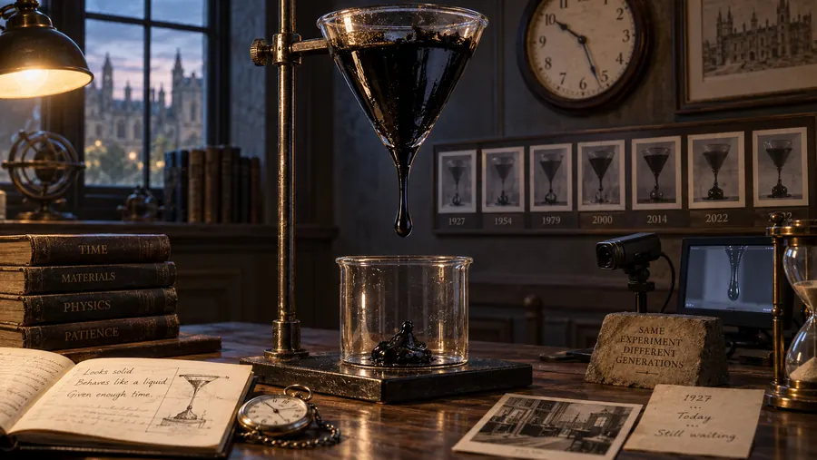

La gota que nadie ha conseguido ver caer
Un experimento lleva goteando desde 1927. En casi un siglo han caído nueve gotas y ningún ser humano ha presenciado una en directo.
En 1927, el profesor Thomas Parnell calentó un poco de brea, la vertió en un embudo de cristal y la dejó asentarse tres años. En 1930 cortó el tallo del embudo y empezó la espera. La brea parece un sólido: si la golpeas con un martillo, se rompe en esquirlas. Pero es un líquido unos 230.000 millones de veces más viscoso que el agua, y gotea. Muy despacio.
La primera gota cayó en 1938. Desde entonces han caído nueve. Parnell murió en 1948 habiendo visto caer dos, ninguna en el momento exacto. John Mainstone heredó el experimento y lo custodió durante 52 años: en 1977 se perdió una caída, en 1988 salió a tomarse un café justo cuando ocurrió, y en el año 2000 instalaron una cámara web que se apagó por un corte de luz veinte minutos antes de la caída. Mainstone murió en 2013 sin haber visto ninguna.
El experimento sigue en marcha en la Universidad de Queensland, con cámara encendida las 24 horas. El primer goteo de brea grabado en vídeo de la historia no fue el suyo: lo consiguió en 2013 un montaje gemelo del Trinity College de Dublín que llevaba décadas olvidado en una estantería.
Fuente: Universidad de Queensland, experimento de la gota de brea (en marcha desde 1927). Premio Ig Nobel de Física, 2005.
Volver a la carta